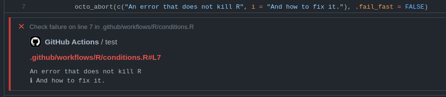

Octolog provides a complete1 API for GitHub workflow commands that makes it easy to create powerful GitHub Actions that create readable logs.
Additionally it is possible to signal conditions with octolog from R that will create annotations when used within GitHub Actions but raise normal R conditions when used interactively. 
Installation
You can install the development version of octolog with either of these options:
pak::pak("assignUser/octolog")
devtools::install_github("assignUser/octolog")What are GitHub Actions?
GitHub Actions is a powerful,free2 CI service integrated into every repository on GitHub. You can use actions created by other users (e.g. the very popular r-lib/actions collection of R related actions) or create your own customized workflow that fits your needs.
Example
The best way to see how {octolog} works, is in an actual workflow. For more information please see the website and the introductory vignette.
Code of Conduct
Please note that the octolog project is released with a Contributor Code of Conduct. By contributing to this project, you agree to abide by its terms.
The only exception is
save-statewhich can only be used in JavaScript actions.↩︎For public repositories.↩︎